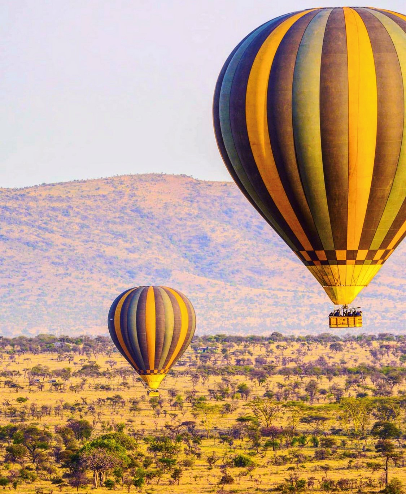
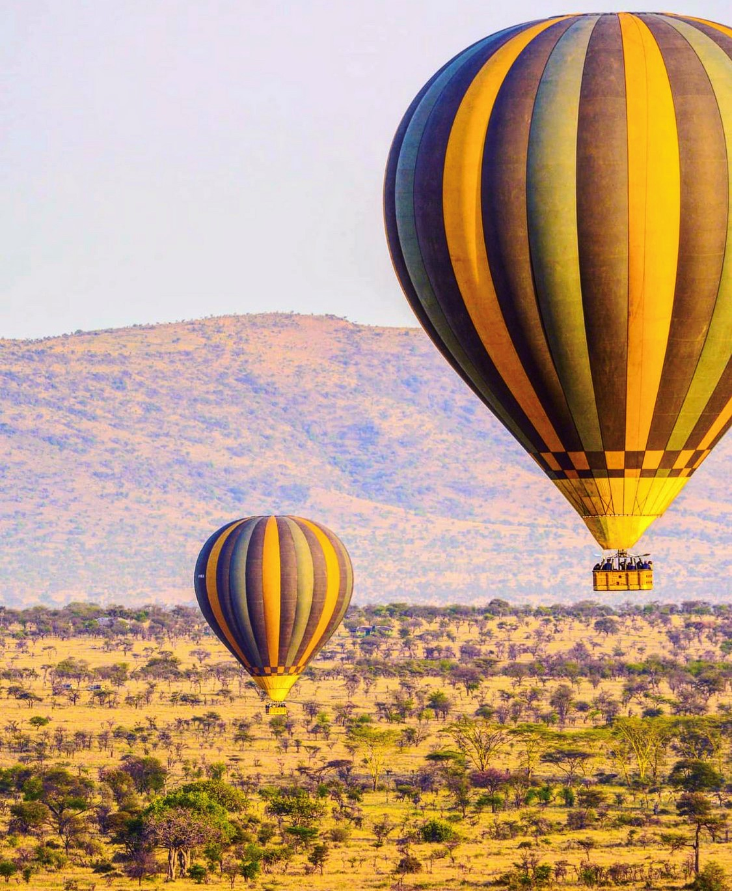

Explore Tanzania
Home to 'the Big Five', Mount Kilimanjaro, the Island of Zanzibar and a whole host of experiences!

 


Things To Do in Zanzibar
- Stone Town, Prison Island & Nakupenda $70pp
- Stone Town Tour $30
- Mikumi National Park $450pp
- Stone Town Tour
- Jozan Forest and Spice Tour $60pp
- Mnemba Island and Turtle Santuary $80pp
- Safari Blue $70pp
- Kuza Caves $60pp
- The Rock Resturant $50pp
- Horse Riding $60pp for 30 Mins
The Best Hotel Locations in Zanzibar
Nungwi is located on the northern tip of the island and is home to a great variety of beach bars and clubs.
Recommended Hotels (STANDARD GARDEN VIEW/DOUBLE ROOM/B&B): Amaan Beach Bungalows (3*) around $94/£80pn,
Z Hotel (4*) & Nungwi Beach Resort by Turaco (4*) around $300/£240pn.
Kendwa a more relaxed area to is neighbour Nungwi, Kendwa provides stunning landscapes, white sand and blue waters.
Recommended Hotel (STANDARD GARDEN VIEW/DOUBLE ROOM/B&B): Kendwa Rocks Hotel (3*) around $175/£122pn.
NOTE: The Government Infrastructure Tax (City Tax) in Zanzibar is $5/£4 per person per night
Tours Include
- Experience Guide
- Full Day Tours include Lunch, Soft Drinks & Fruits
- Half-Day Tours include Fresh Fruits & Soft Drinks
- Transportation To/From Hotel
- Snorkeling Equipments
- Entrance Fees